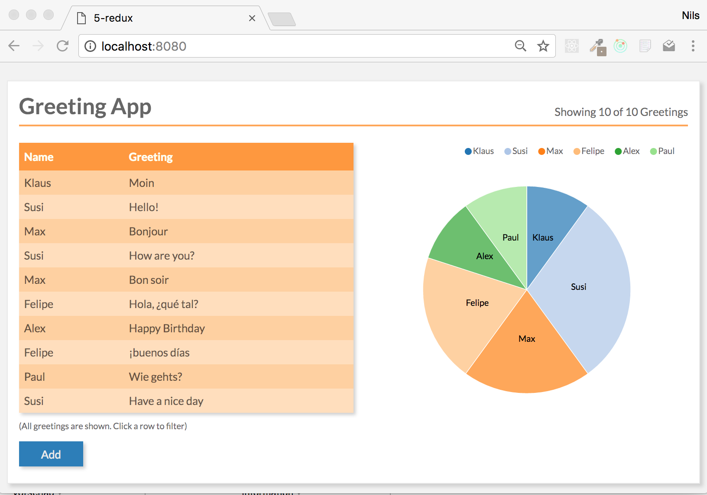
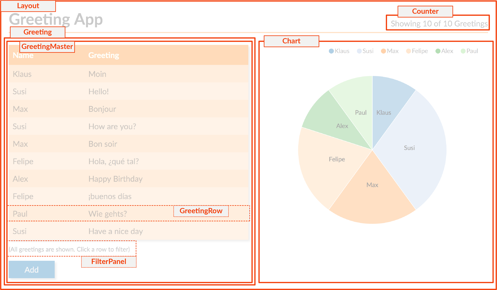
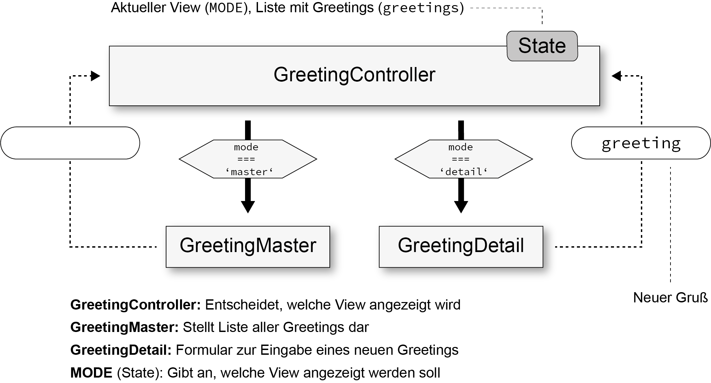
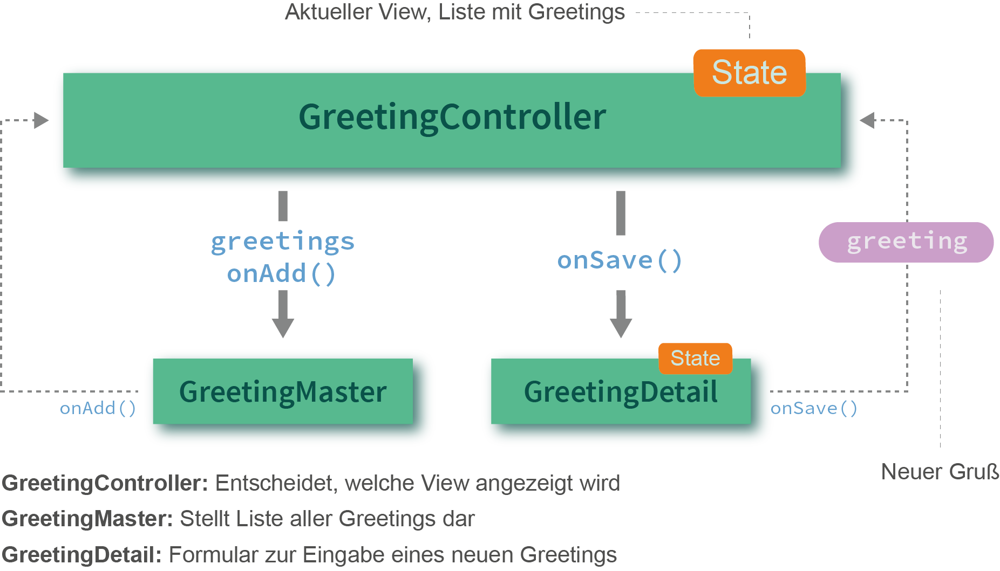
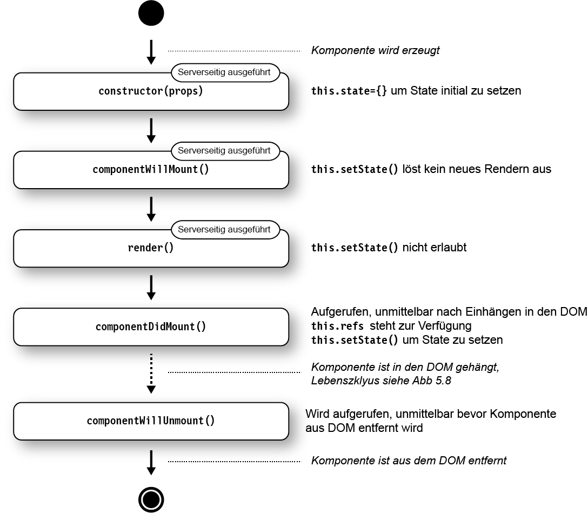
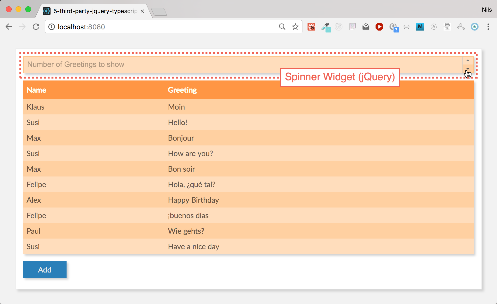

React Workshop - Vorbereitung
Falls noch nicht gemacht:
-
git clone https://github.com/DJCordhose/react-workshop.git - Im geklonten Verzeichnis:
npm install
(Dafür evtl. einen Proxy konfigurieren http://wil.boayue.com/blog/2013/06/14/using-npm-behind-a-proxy/) -
npm start - In neuem Terminal: in
code/workspacewechseln - Ausführen:
npm start - Browser öffnen: http://localhost:8080
- Wenn dort ein Hello-World-Text erscheint ist alles gut
Folien: Im geklonten Verzeichnis
2018_react-typescript-jquery.html
Nils Hartmann / @nilshartmann
Workshop
Einführung in React und TypeScript
Nils Hartmann
Programmierer und Architekt aus Hamburg
JavaScript, Java
Trainings und Workshops
Kontakt: nils@nilshartmann.net
Inhalt
- Teil 0: React-Einführung und Build-Prozess
- Teil I: React-Komponenten
- Teil II: Komponentenhierarchien
- Teil III: Daten lesen und schreiben vom Server
- Teil IV: Arbeiten mit 3rd-Party-Libs (jquery)
- Teil V: TypeScript
- Exkurs/Ausblick: Immutability
Jederzeit: Fragen und Diskussionen!
Beispiel-Anwendung
Teil 0
React-Einführung und Build-Prozess
React
- Framework von und für Facebook (und viele andere)
- Minimales API
- Minimales Feature Set
- Ihr könnt/müsst viele Entscheidungen selber treffen
- Bewusste Verstöße gegen Best-Practices
- Zentrales Konzept: Komponenten
Komponenten in React

Komponenten in React
Unser Beispiel in Komponenten
React Komponenten
- bestehen aus Logik und UI
- keine Templatesprache
- werden deklarativ beschrieben
- werden immer komplett gerendert (kein 2-Wege-Data-Binding)
- werden zu ganzen Anwendungen aggregiert
- können auf dem Server gerendert werden
React Komponenten
- Werden als ES6 Klasse oder Funktion implementiert
- Keine Templatesprache (stattdessen JavaScript)
- Templates können HTML-artige Syntax enthalten (JSX)
class HelloMessage extends React.Component {
render() {
return <h1 className='title'>Hello, World!</h1>
}
}
Exkurs
ES6/ES7
ES6-Referenz
ES6 Features werden vorgestellt, wo wir sie brauchen
ES6: Template Strings
Template Strings werden in Backticks (``) geschrieben und können Ausdrücke (in
${}) enthalten:
const name = "Susi";
const greeting = `Hello, ${name}`; // Hello, Susi
const four = `Two and two is: ${2+2}` // Two and two is: 4
const time = `The time is: ${new Date()}`); // The time is: ...
ES6: Klassen
class Person {
constructor(name) {
this._name = name;
}
getName() {
return this._name;
}
}
class Programmer extends Person {
constructor(name, language) {
super(name);
this.language = language;
}
code() {
return `${this.getName()} codes in ${this.language}`;
}
}const programmer = new Programmer('Erna', 'JavaScript');
console.log(programmer.code());
console.log(programmer instanceof Programmer); // true
console.log(programmer instanceof Person); // trueES6: Arrow Functions
const displayInPage = (text) => {
return document.body.innerHTML +=
`${text}
`;
};// Klammern können weggelassen werden, genau ein Parameter
// ebenso die geschweiften Klassen, wenn nur ein Statement:
const displayInPage = text => document.body.innerHTML += `${text}
`;
Eine erste Komponente: Hello, World!
DemoHello World React
class HelloMessage extends React.Component {
render() {
return (<div>
<input ref={input => this.input = input}
onChange={event => this.updateModel(event)}
value={this.state.greeting} />
<p>{this.state.greeting}, World</p>
<button
onClick={() => this.reset()}>
Clear
</button>
</div>);
} constructor(props) {
super(props);
this.state = {greeting: this.props.greeting};
}
updateModel(event) {
this.setState({greeting: event.target.value});
}
reset() {
this.setState({greeting: ""});
this.input.focus();
}
}Aufruf
// index.html
<html>
<body>
</body>
<script src="dist/main.js"></script>
</html>
// main.js
import React from 'react';
import ReactDOM from 'react-dom';
import HelloMessage from './HelloMessage';
const mountNode = document.getElementById('mount');
ReactDOM.render(<HelloMessage greeting="Hello"/>, mountNode);
Buildprozess
- ES6- und JSX-Code muss nach ECMAScript 5 übersetzt werden
- Status der ES6 Implementierungen der Browser: https://kangax.github.io/compat-table/es6/
- Typische Werkzeuge
- Babel oder TypeScript (Compiler)
- Webpack (Bundler)
- Webpack Dev Sever (HTTP Server mit Hot Reload)
Webpack und Babel

Webpack Development Server
- Zum Ausführen der Anwendung wird ein Webserver benötigt
- Für die Entwicklung
Webpack Dev Server:
- ...führt Webpack auf Basis der Projekt Webpack Konfiguration aus
- ...erzeugt Ausgabe in Memory (Performance)
- ...Hot Reloading: Automatische Aktualisierung nach Code Änderung
- ...React Hot Loader: Zustand bleibt nach Aktualisierung erhalten (Beta)
-
npm startin unserem Beispiel-Projekt
Übung 0: React Hello-World
Mach dich mit den Werkzeugen vertraut und schreib deine erste React-Komponente
Schritt #1: Tool-Chain starten (falls noch nicht gemacht)
Nutze für die Übungen das
workspace-Verzeichnis in diesem Repository. Hier ist eine Tool-Chain mit Webpack und Babel vorbereitet
-
npm install(auf oberster Ebene)
(Dafür evtl. einen Proxy konfigurieren http://wil.boayue.com/blog/2013/06/14/using-npm-behind-a-proxy/) -
cd code/workspace -
npm start - Öffne http://localhost:8080 im Browser
- Wenn auf der Seite 'Hello, World' steht, ist alles gut
Schritt #2: Deine erste React-Komponente
- Ersetze die "statische" Komponente (HelloMessage) mit der React-Komponente aus dem vorherigen Beispiel aus den Folien
-
Zusatzaufgabe: Experimentiere mit der Anwendung, mache einige Änderungen, wie z.B.
- Alle Eingaben sollen in Großbuchstaben auftauchen
- Gib irgendeine Rückmeldung wenn die Eingabe erfolgreich gelöscht wurde
Teil I
React-Komponenten
Ziel-AnwendungReferenz
Themen
- Rendering
- Properties und Zustand
- Referenzen auf DOM-Elemente (Refs)
React: Rendering
Jede React-Komponente braucht eine
render-Methode:
- wird aufgerufen beim ersten Rendering und wenn sich der Zustand ändert
- liefert genau ein Element oder null oder ein Array oder einen String zurück
- kann HTML-artige JSX-Syntax nutzen
class GreetingDetail extends React.Component {
render() {
return (
<input onChange={event => this.updateModel(event.target.value)}
value={this.state.greeting} />
{this.state.greeting}, World
);
}
// ...
}
React: JSX
- Wird wie HTML hingeschrieben, inkl Attribute:
<div><input type="text"/></div> - Attribute, die keine Strings sind, müssen in {} eingechlossen werden:
<Counter label="Count" count={7} showValues={true} /> - Kann pures JavaScript enthalten, eingeschlossen in {}:
const title = 'Hello, World'; <h1>{title.toUpperCase()}</h1> -
class-Attribut heißtclassName:<h1 className="title">...</h1> - CSS-Eigenschaften werden als Objekt übergeben in Camel-Case-Notation:
const styles = { marginLeft: '10px', border: '1px solid red' }; <h1 style={styles}>...</h1>
React: Rendering #2
- DOM-Events werden in React-Events verpackt
- React-Events haben weitgehend selbe API wie DOM-Events
- Es gibt keine automatische Bindung an Modelle (2-Wege Databinding)
- Besonderes Event: onChange
class GreetingDetail extends React.Component {
render() {
return (
<input onKeyPress={event => . . .} />
);
}
// ...
}
ES6: Erweiterte Objekt-Literale
const firstName = 'Klaus';
// ES5:
const person = {
firstName: firstName
};
// ES6:
const person = {
firstName
};
console.log(person.name); // Klaus
ES6: Module, Importe und Exporte
ES6: Export einer einzigen Klasse
// Person.js
class Person {
// ...
}
export default Person;
// Person.js
// in einer Zeile zusammengefasst
export default class Person {
// ...
}
ES6: Import
// Programmer.js
import Person from './Person';
export default class Programmer extends Person {
// ...
}
ES6: Benannte Exporte
// util.js
export function displayInPage(text) {
document.body.innerHTML +=
`${text}
` ;
}
export showInfo = msg => window.alert(`Wichtige Info: ${msg}`);
// or
function displayInPage(text) { . . . }
const showInfo = ...;
// specify exports
export { displayInPage, showInfo };
import {displayInPage} from "./util";
displayInPage('Hello, World');
ES6: Destructuring von Objekten
const person = {
name: 'Olli',
email: 'oliver.zeigermann@gmail.com'
};const {name, notThere} = person;
console.log(`name=${name}`);
// name=Olli
console.log(`notThere=${notThere}`);
// notThere=undefined
function someFunction({name, notThere}) {
console.log(`name=${name}`);
// name=Olli
console.log(`notThere=${notThere}`);
// notThere=undefined
}
someFunction(person);
React: Properties und Zustand
- Properties werden der Komponente von außen übergeben (und nicht verändert)
- Zustand (State) ist eine innere Eigenschaft der Komponente (die verändert werden kann)
- Beides sind Objekte mit Key-Value-Paaren
- Beide können an Unterkomponenten übergeben werden
Properties einer Komponente
- Properties werden über den Konstruktor in die Komponente hineingereicht
- Properties dürfen nicht verändert werden
- Zugriff über
this.props -
this.props.childrenenthält Kind-Elemente
class NavBar extends React.Component {
constructor(props) {
super(props);
}
render() {
return <div className="NavBar">
{this.props.title}
{this.props.children}
</div>;
}
// ...
}
<NavBar title="Navigation"><a href=""> ... </a></NavBar>
Zustand einer Komponente
- Beispiel: Inhalt eines Eingabefelds, Daten vom Server
- Werte üblicherweise immutable
-
Initialisieren im Konstruktor mit
this.state={} - Zustand
lesen über
this.state - Zustand
setzen über
this.setState()- Achtung: kein "reiner" Setter
- Führt alten und neuen Zustand zusammen
- Wird asynchron ausgeführt!
- Löst erneutes rendern der gesamten Komponente aus
Beispiel: Zustand einer Komponente
class GreetingDetail extends React.Component {
constructor(props) {
super(props);
this.state = { name: 'Klaus' };
}
updateModel(event) {
// Zustand ändern: Komponente wird neu gerendert
this.setState({name: event.target.value});
}
render() {
return <input value={this.state.name}
onChange={e => this.updateModel(e)} />
}
// ...
}
Render Zyklus

Virtual DOM
"Rendern" hat doppelte Bedeutung!

React: Referenzen auf nativen DOM
- Elementen kann eine Callback-Funktion
refsübergeben werden - Funktion wird nach dem Rendern mit Referenz auf DOM Element aufgerufen (oder
null) - Diese Referenz kann man z.B. als Member-Variable speichern
class HelloMessage extends React.Component {
render() {
return (
<input ref={input => this.input = input} />
<button
onClick={() => this.input.focus()}>
Focus
</button>
);
}
}
Übung 1: Detail-Ansicht für unsere Gruß-Anwendung
Erzeuge eine Komponente mit der man einen Namen und eine Grußformel eingeben kann
Schritte
Erweitere deine erste React-Komponente im workspace-Ordner
- benenne deine Komponente in
GreetingDetailum - du brauchst zwei Eingabefelder, die
nameundgreetingim Zustand der Komponente setzen - Erweitere deine Komponente so, dass man von außen Properties übergeben kann, die den Zustand initialisieren
- Optionaler Schritt: Kannst du die Komponente so bauen, dass du mit einer einzigen update-Methode beide Felder im Zustand updaten kannst?
Teil II
Komponentenhierarchien
Komplette Anwendung aus Komponenten bauen
Ziel-AnwendungThinking in React
Herausforderungen
- Wie kommt das neue Greeting zum GreetingMaster?
- Wie stellen wir Listen von Komponente (Greetings!) dar?
- Wer steuert den Programmfluss? Vom GreetingMaster zum Detail und zurück?
Themen
- Komponenten als Funktion
- Darstellung von Listen und Keys
- Architektur-Idee: Controller-Komponente und View-Komponente
- Durchreichen von Zustand und Callbacks
- PropTypes
Komponenten als Funktion
- Komponente ist eine einfache Funktion
- entspricht der
render-Methode - Properties werden als Object per Parameter übergeben
- Zurzeit nur ohne Zustand und ohne Lifecycle-Methoden
- Empfehlung: Funktionen statt Klassen verwenden (wenn möglich)
import React from 'react';
export default function Greet(props) {
return (
{props.greeting}
{props.name}
);
}
// Verwendung:
<Greet name="Susi" greeting="Hello" />
Komponenten als Funktion
// Mit Destructuring
export default function Greet({greeting, name}) {
return (
<div>
<h1>{greeting}</h1>
<h2>{name}</h2>
</div>
);
}
// Als Arrow Function
const Greet = ({greeting, name}) => (
<div>
<h1>{greeting}</h1>
<h2>{name}</h2>
</div>
);
export default Greet;
Listen und Keys
- JSX bietet nichts für Listen
- Ausgabe typischerweise über
Array.map - Elemente einer Liste brauchen einen eindeutigen Key
const greetings = [
{ id: 0, name: 'Olli', greeting: 'Huhu' },
{ id: 1, name: 'Oma', greeting: 'Hallo' }
];
const MyTable({greetings}) =>
<table>
{greetings.map(greeting =>
<tr key={greeting.id}>
<td>{greeting.name}</td>
<td>{greeting.greeting}</td>
</tr>
)}
</table>
;
Listen und Keys
- Ab React 16 können Arrays in
renderzurückgegeben werden - (Anstatt eines Root Elements)
- Elemente brauchen trotzdem einen eindeutigen Key
const Title = ({title, subtitle}) => {
return [
<h1 key="title">{title}</h1>,
<h2 key="subtitle">{subtitle}</h2>
];
}
Komponenten in Hierarchien
Beispiel: Unsere Anwendung
Smart und Dumb Components
(Alternativ: Container und Presentation Components)

Durchreichen vom Zustand und Callbacks
- Funktioniert beides über Properties
class GreetingController extends React.Component {
render() {
const {greetings} = this.state;
return <div>
<GreetingMaster greetings={greetings}
onAdd={() => this.setState({mode: MODE_DETAIL})} />
</div>;
}
// ...
}
Properties übergeben mit Object-Spread
- Übergibt alle Eigenschaften eines Objektes als individuelle Properties
class GreetingController extends React.Component {
render() {
const greeting = { name: 'Klaus', greeting: 'Hello' };
return <GreetingDetail {...greeting} />
// entspricht:
// <GreetingDetail name='Klaus' greeting='Hello' />
}
}
PropTypes
- Eine Komponente kann deklarieren, welche Properties sie erwartet
- Auch der Typ kann angegeben werden ( Mögliche Typen)
- Fehlende / falsche Properties führen zu Laufzeitfehlern
- Ab React 15.5 eigenes npm modul:
prop-types - Alternative: Typsystem ( Flow oder TypeScript)
import PropTypes from 'prop-types';
class GreetingDetail extends React.Component { . . . };
GreetingDetail.propTypes = {
greeting: PropTypes.shape({
name: PropTypes.string.isRequired,
greeting: PropTypes.string.isRequired
}),
onAdd: PropTypes.func.isRequired
};
PropTypes
Mit statischen Properties (
static noch kein JS Standard!)
import PropTypes from 'prop-types';
class GreetingDetail extends React.Component {
static propTypes = {
greeting: PropTypes.shape({
name: PropTypes.string.isRequired,
greeting: PropTypes.string.isRequired
}),
onAdd: PropTypes.func.isRequired
};
render() { . . . }
};
PropTypes
Für Komponenten als Funktionen
import PropTypes from 'prop-types';
function HelloMessage(text) { . . . }
HelloMessage.propTypes = {
text: PropTypes.string.isRequired
}
Übung 2: Eine komplette Anwendung zusammen setzen
Füge deinen bestehenden Detail-View (
GreetingDetail) und einen Master-View über eine Controller-Komponente zusammen
Schritte
- kopiere das Material aus
code/material/2-hierarchyin deinen src-Ordner - erweitere im
GreetingControllerdie render-Methode, so dass deinGreetingDetailangezeigt wird, wenn der Benutzer den Add-Button klickt:- dort gibt es bereits einen Kommentar, der dir die richtige Stelle anzeigt und weitere Details enthält
- übergib einen Callback der
addGreetingnutzt
- im deinem
GreetingDetailbrauchst du einen neuen Knopf, der mit dem neuen Gruß den Callback aufruft
(Du kannst deinGreetingDetailverwenden, oder die Vorlage code/material/2-hierarchy/src/_GreetingDetail.js verwenden)
Architektur Beispiel-Anwendung
GreetingMaster

GreetingDetail

Teil III
Daten lesen und schreiben vom Server
Ziel-AnwendungHerausforderungen
- Wie machen wir das Laden und Speichern technisch?
- Wo steht der Code zum initialen Laden der Grüße?
- Wo speichern wir?
- Wie funktioniert asynchrone Verarbeitung in React?
Server-Calls
- React macht keine Angabe, wie Server-Calls (technisch) gemacht werden
- Häufig in React verwendet:
fetch API
- Browser-API zum Ausführen von HTTP Requests
- hohe Verbreitung
- Spezifikation: https://fetch.spec.whatwg.org/
- Polyfill: https://github.com/github/fetch
Beispiel: fetch
// GET
fetch('http://localhost:7000/api/greetings')
.then(response => response.json())
.then(json => /* ... */)
.catch(ex => console.error('request failed', ex));
// PUT
fetch(url, {
method: 'PUT',
headers: {
'Accept': 'application/json',
'Content-Type': 'application/json'
},
body: JSON.stringify(payload)
})
.then(...)
ES6: Promises
Ein Promise ist ein Versprechen auf einen Wert
Wird evtl. erst in der Zukunft eingelöst
Verkettete Ausführung
const promise = . . .;
// then returns a new promise
const promise2 = promise.then(value => `${value} plus stuff`);promise2.then(value => console.log(value));
// Output after 1 second: Result from promise plus stuff
Fehler führen zum Abbruch der Chain
Allerdings muss man etwas tun, um das mitzubekommen: catch()
Catch-Klausel im Erfolgsfall
Promise
// creates and directly resolves promise
.resolve('Result from promise')
.then(x => {
// this will be printed
console.log(x);
})
.then(() => {
console.log('This will be printed');
})
// this will NOT be printed as no error occured
.catch(e => console.log('error: ', e))
// Output:
// Result from promise
// This will be printedCatch-Klausel im Fehlerfall
Promise
// creates and directly resolves promise
.resolve('Result from promise')
.then(x => {
// this will be printed
console.log(x);
throw new Error('Something went wrong');
})
.then(() => {
console.log('This will NOT be printed');
})
// this will be printed
.catch(e => console.log('error: ', e))
// Output:
// Result from promise
// error: [Error: Something went wrong]fetch im Detail
// 1. fetch returns a promise, that will be resolved
// with a Response object when response is received
// from server
fetch('http://localhost:7000/api/greetings')
// 2. the Response object contains a json() function,
// that returns the parsed JSON from the Response body
.then(response => response.json())
// 3. with the resolved JSON object we set the
// component state (=> leads to re-rendering)
.then(json => this.setState({greetings: json})
// 4. in case something goes wrong (during request,
// request processing or rendering)
.catch(ex => console.error('request failed', ex));
// as an alternative we could set and render an error msg:
// .catch(ex => this.setState({error: ex})
Initiales Laden von Daten
Komponenten können optionale Lifecycle-Methoden haben
(c) "React: Die praktische Einführung in React, React Router und Redux", dpunkt 2016
Initiales Laden von Daten
componentDidMount wird aufgerufen, wenn Komponente ins DOM gerendert wurde
Hier werden Daten üblicherweise initial geladen:
class GreetingController extends React.Component {
constructor(props) {
// intial state (empty now)
this.state = { greetings: [] };
}
componentDidMount() {
fetch('/api/greetings')
.then(response => response.json())
.then(json => this.setState({greetings: json})
.catch(. . .)
;
}
}
Speichern von Daten
Zum Beispiel als Folge einer Benutzerinteraktion:
class GreetingController extends React.Component {
render() {
...
<GreetingDetail onAdd={greeting => this.saveGreeting(greeting)} />
...
}
saveGreeting(greetingToBeSaved) {
fetch('/api/greetings', {
method: 'POST',
headers: ...,
body: JSON.stringify(greetingToBeSaved)
})
.then(response => response.json())
.then(json => ...)
.catch(. . .);
}
}
Übung: Laden und Speichern der Daten von/auf einem Server
Entwickle auf Basis von fetch eine Version des GreetingControllers, der die Daten auf dem Server laden und dort wieder speichern kann
Der Server ist bereits vorgegeben und kann mit
npm start im Root-Verzeichnis gestartet werden. Er ist dann unter Port 7000 erreichbar
Schritte
- Kopiere
code/material/3-remote/GreetingController.jsin deinen Arbeitsbereich - Die Serverzugriffe sollen in
loadGreetingsundsaveGreetingerfolgen - Dort sind bereits entsprechende TODOs für dich eingetragen
Exkurs
Integration von 3rd-Party Libs
3rd Party Libs?
Es gibt eine große Anzahl von sehr praktischen JavaScript-Bibliotheken
Viele davon sind aber nicht als React-Komponenten entwickelt worden
Beispiele
jQuery und jQuery Plugins wie z.B. Bootstrap
d3 für interaktive SVGs und Chart Bibliotheken wie nvd3
Unser Beispiel: Verteilung der Grüße
Aufgabe: Einbetten des d3/nvd3 Pie Charts in eine React-Komponente

nvd3 Pie Chart mit d3
Herausforderungen?
- Wie kommen wir an den DOM Knoten der React-Komponente?
- Wie sagen wir React, dass nun NVD3 den Rest macht? Also, dass React nicht mehr neu rendern soll.
- Änderungen des Zustands sollen nach wie vor richtig dargestellt werden
- Ab welchem Zeitpunkt soll NVD3 das Rendern übernehmen?
- Wie können wir aus NVD3 heraus auch wieder andere React-Komponenten beeinflussen?
- Wie räumen wir wieder auf?
Greeting Chart Komponente: Verwendung
<Chart
data={...}
onSegmentSelect={segment => . . . }
/>
Greeting Chart Komponente #1
class Chart extends React.Component {
render() {
// we render an empty svg and
// remember the reference to the DOM node
return <svg ref={c => this._chart = c}></svg>
}
// called directly after first render
componentDidMount() {
// once rendered by react we create the nvd3 chart
const chart = createNvd3Chart(this._chart, this.props.data);
// we delegate the label of clicked segment
// back to parent component
chart.pie.dispatch.on("elementClick",
e => this.props.onSegmentSelected(e.data.label));
}
// ...
}
Lifecycle-Methoden #2
Greeting Chart Komponent #2
class Chart extends React.Component {
// ...
// if it returns false, component will not be rendered
shouldComponentUpdate() {
// once rendered react never renders again
return false;
}
// called when properties update
componentWillReceiveProps(nextProps) {
const {data} = nextProps;
// we still get updates of properties making it reactive
updateNvd3Chart(this._chart, data);
}
// called just before destroying component
componentWillUnmount() {
this._d3selection.remove();
}
}
Teil VI
Arbeiten mit 3rd-Party-Libs (jquery)
3rd Party Libs?
Es gibt eine große Anzahl von sehr praktischen JavaScript-Bibliotheken
Viele davon sind aber nicht als React-Komponenten entwickelt worden
Beispiele
jQuery und jQuery Plugins wie z.B. Bootstrap
d3 für interaktive SVGs und Chart Bibliotheken wie nvd3
Wo kommen die Libs her
- einbinden als JS datei in index.html (wie in "herkömmlicher" Web Anwendung)
- installieren als npm Modul (mittlerweile sehr hohe Verbreitung)
Unser Beispiel:
Limitieren der Einträge in der Tabelle
Aufgabe: Einbetten des jQuery UI Spinner Widgets in eine React-Komponente
React Spinner
TODO: Ergebnis zeigen, Aufruf der Spinner Komponente
Herausforderungen?
- Wie kommen wir an den DOM Knoten der React-Komponente?
- Wie sagen wir React, dass nun NVD3 den Rest macht? Also, dass React nicht mehr neu rendern soll.
- Änderungen des Zustands sollen nach wie vor richtig dargestellt werden
- Ab welchem Zeitpunkt soll NVD3 das Rendern übernehmen?
- Wie können wir aus NVD3 heraus auch wieder andere React-Komponenten beeinflussen?
- Wie räumen wir wieder auf?
Greeting Chart Komponente: Verwendung
<Chart
data={...}
onSegmentSelect={segment => . . . }
/>
Greeting Chart Komponente #1
class Chart extends React.Component {
render() {
// we render an empty svg and
// remember the reference to the DOM node
return <svg ref={c => this._chart = c}></svg>
}
// called directly after first render
componentDidMount() {
// once rendered by react we create the nvd3 chart
const chart = createNvd3Chart(this._chart, this.props.data);
// we delegate the label of clicked segment
// back to parent component
chart.pie.dispatch.on("elementClick",
e => this.props.onSegmentSelected(e.data.label));
}
// ...
}
Lifecycle-Methoden #2
Greeting Chart Komponent #2
class Chart extends React.Component {
// ...
// if it returns false, component will not be rendered
shouldComponentUpdate() {
// once rendered react never renders again
return false;
}
// called when properties update
componentWillReceiveProps(nextProps) {
const {data} = nextProps;
// we still get updates of properties making it reactive
updateNvd3Chart(this._chart, data);
}
// called just before destroying component
componentWillUnmount() {
this._d3selection.remove();
}
}
Teil V
React mit TypeScript entwickeln
Hintergrund: TypeScript
TypeScript is a superset of JavaScript that compiles to plain JavaScript ( http://www.typescriptlang.org/)
- Erweitert JavaScript um ein Typen System
- Jeder gültige JavaScript Code ist auch gültiger TypeScript Code
- Mittels des TypeScript Compilers wird aus TS Code JavaScript Code
- Entwickelt von Microsoft (!)
- Unterstützung in vielen IDEs (z.B. Anzeige von Fehlern, Refactoring, ...)
Wichtige Unterschiede zu Java/C#
- Typ-Informationen sind nach dem compilieren weg (keine Reflection API etc)
- Das gilt auch für Sichtbarkeiten und readonly Felder
- Es wird auch JavaScript-Code erzeugt, selbst wenn es einen Compile-Fehler gibt
- Im Gegensatz zu Java/C# sind bei TypeScript zwei Typen kompatibel, sofern sie dieselbe Struktur haben
TypeScript Grundlagen
Typ-Angaben werden hinter einen Bezeichner geschrieben
// Variablen können Typ-Informationen bekommen
let foo: string;
foo = 'yo';
// Error: number: This type is incompatible with string
foo = 10;
// Funktionen
function sayIt(what: string): string {
return `Saying: ${what}`;
}
sayIt('Klaus'); // ok
sayIt(10); // error
// Arrow Funktionen
const sayIt = (what: string): string => `Saying: ${what}`;
sayIt('Moin');
sayIt(123); // Error: Argument of type '123' is not assignable
// to parameter of type 'string'.
Eingebaute Typen
// string
let city: string = 'Hamburg';
// boolean
let isDone: boolean = false;
// number
let theAnswer: number = 42;
// array (note the [])
let cities: string[] = ['Hamburg', 'Barcelona'];
// alternative:
let languages: Array<string> = ['JavaScript', 'TypeScript'];
// any
let theUnknown: any = 'Who cares';
theUnknown = 666; // ok
theUnknown = true; // ok
let a: number = theUnknown; // ok
// void
function log(s: string): void { /* ... */ }
Typen können abgeleitet (inferred) werden
let city = 'Hamburg'; // city ist ein String
city = 42;
// Fehler: [ts] Type '42' is not assignable to type 'string'.
// Explizite Angabe eines Types (parameter)
// und abgeleiteter Typ (Return Type der Funktion)
function sayIt(what: string) {
return `Saying: ${what}`;
}
const said: string = sayIt('Hello TypeScript'); // ok
const saidItWrong: number = sayIt('Hello TypeScript'); // error!
Strict Mode
- strict: seit TypeScript 2.3
- Shortcut u.a. für:
-
noImplicitAny:
anymuss explizit hingeschrieben werden - strictNullChecks: Null muss explizit erlaubt werden (z.B. bei Rückgabewerten)
-
noImplicitAny:
- Empfehlung: für neue Projekte einschalten, sonst Schrittweise
https://www.typescriptlang.org/docs/handbook/compiler-options.html
null und undefined
null muss explizit zugelassen werden
(strictNullChecks):
let city:string = null; //Type 'null' is not assignable to type 'string'.
let optionalCity:string|null = null; // OK
Optionale Parameter können mit ? gekennzeichnet werden (erlauben dann auch
undefined)
function greet(name: string, greeting?: string) {
console.log(`${greeting || 'Hello'}, {name}`);
}
greet('Susi', 'Moin')// Moin, Susi
// 2. Parameter ist optional:
greet('Klaus'); // Hello, Klaus
greet('Peter', null); // Argument of type 'null' is not assignable
// to parameter of type 'string | undefined'.
Klassen
class Sayer {
what: string; // Typ-Angabe für Felder ist erforderlich
constructor(what: string) { // Typ-Angabe für Parameter ist erforderlich
this.what = what;
}
// Angabe des Return-Types optional
sayIt(): string {
return `Saying: ${this.what}`;
}
}
Klassen (Sichtbarkeiten)
class Sayer {
// Erlaubte Sichtbarkeiten: private | protected | public
private what: string;
constructor(what: string) {
this.what = what;
}
sayIt(): string {
return `Saying: ${this.what}`;
}
}
const sayer = new Sayer("Susi");
sayer.what = ""; // ERROR: Property 'greeting' is private
Klassen (Parameter Properties)
class Sayer {
// identisch zu vorherigem Beispiel
constructor(private what: string) {
}
sayIt(): string {
return `Saying: ${this.what}`;
}
}
Klassen (readonly Felder)
class Sayer {
readonly what: string;
// Alternativ:
constructor(readonly public what: string) {
}
setWhat(newWhat: string) {
this.what = newWhat; // ERR Cannot assign to 'what'
// because it is a read-only property.
}
}
Eigene Typen
Mit
interface können eigene Typen defniert werden:
// Komplexer Typ
interface Person {
name: string; // Pflicht
livesIn?: string; // Optional
}
const susi: Person = { // OK
name: 'Klaus',
livesIn: 'Hamburg'
};
const klaus: Person = { // OK (livesIn ist optional)
name: 'Klaus'
}
const helmut: Person = {} // Error: Property 'name' is missing
const lukas: Person = {
name: 'Lukas',
profession: 'Lokführer'
} // Error: 'profession' does not exist in type 'Person'.
Typ Kompatibilität
Im Gegensatz zu Java/C# ("nominal typing") sind bei TypeScript zwei Typen kompatibel, sofern sie dieselbe Struktur haben ("structural typing")
interface Book {
title: string
}
interface Movie {
title: string
}
const book:Book = { title: "Das Kapital" };
const movie:Movie = book; // OK, obwohl Book !== Movie
Generics
Generische Typen verwenden
interface Person { name: string };
interface Movie { title: string };
let persons:Array<Person> = [];
let movies:Array<Movie> = [];
persons.push({name: 'Klaus'});
movies.push({title: 'Batman'});
persons.push({title: 'Casablanca'}) // error ('title' not in Person)
persons = movies; // error
Arbeiten mit externen Bibliotheken
Typings installieren und verwenden
- Typings sind optional, können aber über zusätzliches Deklarations-File hinzugefügt werden
- Typings für Kern-Bibliotheken kommen mit TypeScript Compiler
- Manche Bibliotheken werden bereits mit TypeScript Deklarations-Files ausgeliefert (z.B. Redux)
- Typen können über npm installiert werden und sind dann ohne weiter Schritte nutzbar (z.B. npm install @types/react --save)
Arbeiten mit externen Bibliotheken
Typings selber beschreiben
- Workaround, wenn keine Typings vorhanden sind
// declarations.d.ts // TODO
React-Komponenten mit TypeScript
State und Properties von Komponenten werden mit Typen beschriebenVorraussetzungen
- React Type Deklarationen installieren:
npm install --save @types/react @types/react-dom - (Externe) Module, die kein Default-Export haben müssen mit
import *importiert werden:// JavaScript/Babel: import React from 'react'; // TypeScript import * as React from 'react'; - Dateien, die JSX-Code enthalten, müssen mit
.tsxenden - Compiliert wird mit TypeScript (statt Babel). Integration in Webpack mit
awesome-typescript-loader
Getypte React Komponenten
React.Component ist eine generische Klasse, die einen Typ für Properties und State erwartet
interface Greeting = {name: string; greeting: string};
interface GreetingDetailProps {
greeting?: Greeting;
onSave: (newGreeting: NewGreeting) => void;
}
interface GreetingDetailState {
name: string;
greeting: string;
}
class GreetingDetail
extends React.Component<GreetingDetailProps, GreetingDetailState> {
// ...
}
Typsicherheit in React Komponenten
Properties und State sind typsicher
constructor(props: Props) {
super(props);
this.state = { name: '', greeting: ''} // OK
// ERROR: Object literal may only specify known properties,
// and 'aha' does not exist in type 'Readonly<State>'
this.state = {name: '', greeting: '', aha: 10};
// ERROR: Cannot assign to 'greeting' because
// it is a constant or a read-only property.
this.state.greeting = 'no way';
}
render() {
// ERROR: Property 'nothere' does not exist on type...
return <div>{this.props.nothere}</iv>;
}
React Events in TypeScript
class GreetingDetail extends React.Component<Props, State> {
// . . .
updateModel(event: React.SyntheticEvent<HTMLInputElement>) {
// 'currentTarget' anstatt 'target' verwenden:
const { name, value } = event.currentTarget;
// . . .
// Compile error!
this.setState({[name]}: value);
// typechecking ausschalten
this.setState({[name as any]: value});
// @ts-ignore (alternative, seit TS 2.6)
this.setState({[name]}: value);
}
}
Functional Components
type GreetingMasterProps = {
greetings: Greeting[]
onAdd: () => void
};
const GreetingMaster = (props: GreetingMasterProps) => {
const {greetings, onAdd} = props;
// . . .
}
// or
const GreetingMaster = ({greetings, onAdd}: GreetingMasterProps) => {
// . . .
}
// or
const GreetingMaster: React.SFC<GreetingMasterProps> = props => {
const {greetings, onAdd} = props;
// . . .
}
Übung: Eine Komponente auf TypeScript umstellen
Stelle die GreetingDetail Komponente auf TypeScript um
Hinweis: Bitte arbeite dazu in dem neuen Workspace
code/workspace-jquery-typescript:
- Dieses Verzeichnis enthält die Anwendung aus unserem letzten Schritt, aber in TypeScript implementiert
- Lediglich das
GreetingDetailist noch in JavaScript implementiert - Du kannst den Webpack Server in diesem Verzeichnis ebenfalls mit
npm startstarten - Denk dran, deinen laufenden Webpack Server vorher zu beenden
Schritte
- Definiere einen Typen für die Properties und den State und passe die
GreetingDetail-Klasse an - Füge der Komponente das
input-Property hinzu (Type:HTMLInputElement) - Experimentiere (optional):
- Was passiert, wenn Du im
GreetingDetailauf ein nicht bekanntes Property zugreifst? - Was passiert, wenn Du im
GreetingDetailden State mitthis.state = { . . .}neu setzt? - Was passiert, wenn Du beim Aufrufen des
GreetingDetail(GreetingController) ein zusätzliches Property übergibst?
- Was passiert, wenn Du im
Exkurs
Immutability
PureComponents: https://reactjs.org/docs/optimizing-performance.html#avoid-reconciliation http://reactkungfu.com/2015/08/pros-and-cons-of-using-immutability-with-react-js/
Geschafft ;-)
Vielen Dank für Eure Teilnahme!
Kontakt: nils@nilshartmann.net